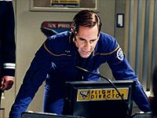

|
MANCHETE
DO EPISDIO
Flashback
de Enterprise mostra
astronautas e o 'Right Stuff'
Episdio
anterior | Prximo
episdio
Sinopse:
A Enterprise est investigando sinais de uma possvel nebulosa totalmente composta por matria escura quando Archer recebe um chamado perturbador do almirante Forrest. Ele conta ao capito que A.G. Robinson, um velho colega do programa NX, morreu, durante uma escalada do monte McKinley, na Terra.
Archer fica arrasado com a notcia, mas segue com seus planos de conduzir um shuttlepod at a nebulosa e usar os dispositivos pirotcnicos desenvolvidos por Trip Tucker para detect-la. Apesar de querer ir sozinho, T'Pol acaba conseguindo convenc-lo a deixar que ela v com ele.
A bordo, o capito relembra os velhos tempos do programa NX, em que ele e Robinson eram rivais, nove anos atrs. O motor desenvolvido por Henry Archer estava sendo testado em uma pequena nave, e os pilotos da Frota Estelar ainda tentavam us-lo para romper a barreira da dobra 2.
O vo estava sendo disputado por Archer e Robinson, mas o ento comodoro Forrest deu a misso ao segundo. Apesar da frustrao, o mais importante para Archer era provar que o motor de seu pai funcionava. Depois da deciso, ele foi ao bar 602, refgio de boa parte do pessoal da Frota Estelar nas horas de folga, e at chegou a propor um brinde ao sucesso de Robinson, a despeito de seu desgosto pessoal.
Durante o vo, Robinson conseguiu romper a dobra 2, mas seus esforos em empurrar a nave ainda mais adiante, apesar das ordens para que ele interrompesse o vo, acabaram levando desestabilizao do campo de dobra e perda do veculo. Ele escapou com vida realizando a primeira sada num casulo de fuga em uma nave viajando em dobra, nas imediaes de Jpiter.
De volta Terra, Robinson declarou que os problemas foram causados pelo motor, que era inerentemente instvel. Os Vulcanos ento decidiram reforar seu pedido para que o programa NX fosse interrompido e um novo motor fosse desenvolvido. Sensibilizado, o Comando da Frota Estelar decidiu interromper o projeto indefinidamente, apesar dos protestos de um certo engenheiro, o tenente Charles 'Trip' Tucker, da equipe tcnica de Jefferies.
Depois, no 602, Robinson recriminado por Archer e volta a falar mal do motor de dobra desenvolvido pelo pai dele. Os dois comeam a brigar e o conflito s interrompido depois que Trip --que comea a se tornar grande amigo de Archer-- e outros oficiais apartam a dupla.
Passado o calor do conflito, Archer tenta mais uma vez convencer Robinson a ajud-lo a salvar o programa, apresentando alguns clculos de Trip sobre o alinhamento de distribuio de antimatria no motor. Robinson sugere que eles tentem algo mais ousado do que apresentar clculos para salvar o NX: roubar o segundo prottipo e realizar um vo no-autorizado com as modificaes sugeridas por Trip.
Ambos decidem seguir esse curso e, com a ajuda do engenheiro, fazem um lanamento no-autorizado sem serem notados at que estivessem no espao. Forrest fica sabendo e ordena o retorno imediato, mas a dupla, a bordo da chamada NX-Beta, no muda de idia e entra em dobra. Com Archer pilotando, a nave atinge de forma estvel a velocidade de dobra 2,5, para a surpresa de todos.
De volta, ambos levam uma reprimenda, mas o programa ganha continuidade. Duvall se torna o primeiro a atingir dobra 3 e, quando chega a hora de projetar uma nave estelar a receber o motor, Archer se torna o primeiro capito da NX-01, a Enterprise.
Depois de contada a histria, e na terceira e derradeira tentativa de detectar a nebulosa de matria escura, os dispositivos de Trip tm sucesso, obtendo resultados cientficos inditos. No retorno nave, T'Pol sugere que aquele objeto ganhe o nome oficial de nebulosa Robinson.
Comentrios:
Eu sou f da histria da explorao espacial. E tambm sou f do livro de Tom Wolfe e do filme baseado nele, "The Right Stuff" (no Brasil, "Os Eleitos"), que conta a trajetria dos primeiros astronautas americanos, no Projeto Mercury. Tendo dito isso, impossvel para mim no apreciar
"First Flight".
 Mesmo que voc nunca tenha visto "The Right Stuff" e que no d muita bola para o programa espacial contemporneo, ainda assim
"First Flight" merece a sua ateno. Ele um dos raros episdios de
Enterprise que se prope a seguir a linha da srie e introduzir elementos verdadeiramente "retrs" na cronologia.
O mecanismo de flashback manjado, e as cenas "atuais" de Archer e T'Pol so cansativas e at desnecessrias, exceto por oferecer a justificativa e o andamento para a prpria narrativa dos eventos passados, mas o contedo mais do que compensa por essas falhas.
O episdio faz o que poucos conseguiram em Jornada nas
Estrelas, apesar da aparente obviedade do fato: ele mostra que nossos personagens favoritos so, em essncia, astronautas. Dificilmente conseguimos colocar na mesma galeria James Kirk e John Glenn, mas, em essncia, ambos merecem figurar na mesma lista --a nica real diferena entre eles que a convenincia da fico cientfica poupa Kirk dos trajes espaciais com frequncia muito maior.
Em "First Flight" vemos claramente a origem dos primeiros capites da Frota Estelar marcada por um programa de pilotos-astronautas, na linha do que acontece na realidade. Todos os detalhes so moldados para lembrar isso, desde a existncia do bar 602, at o uso de trajes espaciais laranjas, do mesmo tom que usam atualmente os astronautas que voam nos nibus espaciais da NASA.
O esforo acaba produzindo algumas foradas de barra, como uma decolagem terrestre para uma nave sofisticada como o prottipo equipado com o motor NX (que faria muito mais sentido se ficasse atracada a uma estao, permanentemente no espao), mas isso compensado pelo senso de nostalgia e pela sensao de que estamos vendo os velhos e audazes ases da aviao, numa nova roupagem astronutica.
Como histria em si, o enredo interessante e consegue despertar a ateno, embora j saibamos evidentemente como ele vai terminar, com Archer no comando da bem-sucedida NX-01. Em termos de formato narrativo, o esquema muito similar a
"Carbon Creek", do incio da temporada. Mas aqui o tema acabou se encaixando melhor ao esprito da srie.
Num segmento em que os personagens so basicamente o sustentculo fundamental, a escalao dos atores convidados era crucial. E podemos dizer que os produtores se saram muito bem com Keith Carradine, que d um verdadeiro show como A.G. Robinson. Verdade seja dita, ele tem muito mais presena que Archer, ainda mais quando se contrasta o estilo "menino comportado" de Jonathan com o modelo rebelde de A.G.
Tambm interessante a introduo de Ruby, a garonete, que foi antes mencionada na srie, mas nunca vista. E um bom golpe do roteiro mencionar que Tucker fazia parte da equipe do engenheiro Jefferies, numa oportuna homenagem ao recm-falecido designer que criou o visual da
Srie Clssica, incluindo a venervel NCC-1701.
Num episdio em tese pouco exigente em termos de efeitos especiais, o desempenho notvel. No sei se a opinio geral, mas sempre fico feliz de ver os planetas do nosso Sistema Solar em Jornada nas
Estrelas. Nesse contexto, mostrar Jpiter veio bem a calhar. E o design "aerodinmico" do prottipo NX, ainda que inverossmil, garante boas tomadas.
No fosse pelos dilogos artificiais e convenientes ao extremo entre Archer e T'Pol no shuttlepod,
"First Flight" poderia muito bem ser o nico episdio quatro estrelas da temporada. Mas ainda no foi desta vez. Apesar disso, temos aqui um segmento para ver e rever, que quebra o estigma
montono da srie.
Citaes:
Archer - "Do you remember what Buzz Aldrin said when stepped on the Moon? Nobody does, because Armstrong went first."
("Voc se lembra do que Buzz Aldrin disse quando pisou na Lua? Ningum lembra, porque Armstrong foi primeiro.")
Tucker (para um Vulcano) - "Just because it took you a hundred years to crack warp 2 doesnt mean itll take us that long."
("S porque vocs levaram cem anos para atingir a dobra 2 no significa que vamos levar tanto assim.")
A.G. Robinson - "Were not going to get anywhere without taking risks."
("No vamos a lugar nenhum sem correr riscos.")
Trivia:
 "First Flight" foi um marco comemorativo do 50 episdio da srie.
"First Flight" foi um marco comemorativo do 50 episdio da srie.
O episdio teve aparies dos "Marinheiros do Ano" do porta-avies americano USS Enterprise, a exemplo do que aconteceu no ano anterior com "Desert Crossing". Um dos figurantes marinheiros, James D. Frey, disse: "Esse o sonho de uma vida, uma experincia de uma vez na vida. Voc no pode chegar mais perto de
Jornada nas Estrelas que isso."
As filmagens principais de "First Flight" foram de 10 a 19 de maro de 2003. As cenas filmadas nos dois primeiros dias usaram os cenrios da NX-01, antes que a produo se movesse para os novos cenrios construdos para as cenas em flashback. Neles havia o Hangar-NX, o Controle da Misso NX e o 602 Club.
Ficha
tcnica:
Escrito por Chris Black & John Shiban
Direo de LeVar Burton
Exibido em 14/05/2003
Produo:
050
Elenco:
Scott
Bakula como Jonathan Archer
Jolene Blalock como
T'Pol
John Billingsley
como Phlox
Anthony Montgomery
como Travis Mayweather
Connor Trinneer como
Charlie 'Trip' Tucker III
Dominic Keating como
Malcolm Reed
Linda Park como Hoshi Sato
Elenco convidado:
Keith Carradine como Robinson
Vaughn Armstrong como almirante Forrest
Victor Bevine como controlador de vo
Michael Canavan como consultor Vulcano
Brigid Brannaugh como Ruby
John B. Moody como oficial de segurana
Episdio
anterior | Prximo
episdio
|